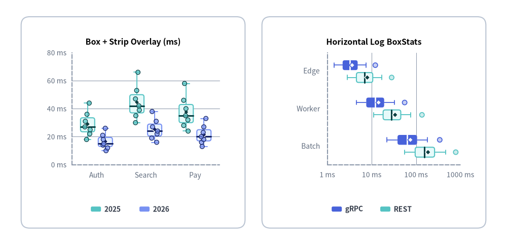

drawlib.charts.box（箱ひげ図・ストリッププロット）
統計的な箱ひげ図（ボックスプロット）、1D／ジッター付きストリッププロット、および両者を重ね合わせたハイブリッド分布チャートを構築するモジュールです。複数系列のカテゴリ別グループ表示、事前集計済み BoxStats サマリ、Tukey IQR・最小最大・パーセンタイル方式のひげ（Whisker）計算、平均値・外れ値マーカー、対数スケール軸、アニメーション部分描画をサポートします。drawlib.charts.box からインポートします（from drawlib.charts.box import Axis, BoxChart, BoxStats, Series）。

Source Code
from drawlib.canvas import save, setup
from drawlib.charts.box import BoxChart, BoxStats
from drawlib.shapes import rectangle
from drawlib.styles import Colors, Styles
setup(width=120, height=58)
card_style = Styles.Neutral.patch(shape_r=2.0, shape_line_color=Colors.Gray4, shape_fill_color=Colors.White)
rectangle((31.5, 29.0), width=53.0, height=50.0, style=card_style)
rectangle((88.5, 29.0), width=53.0, height=50.0, style=card_style)
# Left: Vertical Box + Strip Overlay from Raw Samples
v_box = BoxChart(
axis_line_style=Styles.MutedDashed,
categories=["Auth", "Search", "Pay"],
width=48.0,
height=37.0,
orientation="vertical",
show_box=True,
show_points=True,
show_mean=True,
box_width_ratio=0.72,
box_r=0.5,
jitter=0.42,
point_radius=0.52,
axis_text_style=Styles.Muted.patch(text_size=10.0),
grid_style=Styles.MutedThin,
title="Box + Strip Overlay (ms)",
title_style=Styles.BlackBold.patch(text_size=11.5),
)
v_box.configure_y_axis(min_value=0.0, max_value=80.0, tick_step=20.0, unit="ms")
v_box.add_series(
"2025",
[
[18.0, 22.0, 25.0, 27.0, 31.0, 36.0, 44.0],
[30.0, 35.0, 39.0, 42.0, 47.0, 53.0, 66.0],
[24.0, 28.0, 32.0, 35.0, 40.0, 46.0, 58.0],
],
style=Styles.SecondaryNeutral,
)
v_box.add_series(
"2026",
[
[10.0, 12.0, 14.0, 15.0, 18.0, 21.0, 26.0],
[16.0, 19.0, 22.0, 24.0, 27.0, 31.0, 38.0],
[13.0, 16.0, 18.0, 20.0, 23.0, 27.0, 33.0],
],
style=Styles.PrimaryNeutral,
)
v_box.draw(xy=(7.5, 13.5))
v_box.draw_legend(xy=(21.5, 8.5), text_style=Styles.DarkBold.patch(text_size=10.0), orientation="horizontal", item_gap=3.5)
# Right: Horizontal Logarithmic BoxChart from Pre-Aggregated BoxStats
h_box = BoxChart(
axis_line_style=Styles.MutedDashed,
categories=["Edge", "Worker", "Batch"],
width=48.0,
height=37.0,
orientation="horizontal",
show_outliers=True,
show_mean=True,
box_width_ratio=0.66,
box_r=0.5,
point_radius=0.55,
axis_text_style=Styles.Muted.patch(text_size=10.0),
grid_style=Styles.MutedThin,
title="Horizontal Log BoxStats",
title_style=Styles.BlackBold.patch(text_size=11.5),
)
h_box.configure_x_axis(scale="log", min_value=1.0, max_value=1000.0, ticks=[1.0, 10.0, 100.0, 1000.0], unit="ms")
h_box.add_series(
"gRPC",
[
BoxStats(min=1.4, q1=2.2, median=3.2, q3=4.8, max=7.5, mean=3.6, outliers=[12.0]),
BoxStats(min=4.5, q1=7.5, median=12.0, q3=19.0, max=32.0, mean=14.2, outliers=[55.0]),
BoxStats(min=22.0, q1=38.0, median=62.0, q3=105.0, max=180.0, mean=74.0, outliers=[340.0]),
],
style=Styles.PrimaryFlat,
)
h_box.add_series(
"REST",
[
BoxStats(min=2.8, q1=4.5, median=6.8, q3=10.5, max=17.0, mean=7.9, outliers=[28.0]),
BoxStats(min=11.0, q1=18.0, median=28.0, q3=45.0, max=76.0, mean=33.5, outliers=[135.0]),
BoxStats(min=55.0, q1=95.0, median=155.0, q3=260.0, max=460.0, mean=185.0, outliers=[780.0]),
],
style=Styles.SecondaryNeutral,
)
h_box.draw(xy=(64.5, 13.5))
h_box.draw_legend(xy=(78.5, 8.5), text_style=Styles.DarkBold.patch(text_size=10.0), orientation="horizontal", item_gap=3.5)
save()
classAxis#
BoxChart・BarChart・LineChart・AreaChart・ScatterChart で共有される直交座標軸（数値軸・カテゴリ軸）モデルです。線形／対数スケール、値域、目盛り生成、グリッド線の表示、ラベルの書式設定を制御します。
class Axis:
def __init__(
self,
scale: ScaleType = "linear",
min_value: float | None = None,
max_value: float | None = None,
ticks: list[float] | None = None,
tick_step: float | None = None,
format: FormatterType = None,
unit: str = "",
label: str = "",
show_grid: bool = True,
grid_style: Style | None = None,
show_axis_line: bool = True,
line_style: Style | None = None,
show_ticks: bool = True,
tick_label_style: Style | None = None,
label_style: Style | None = None,
) -> None: ...
パラメータ#
| パラメータ | 型 | デフォルト | 説明 |
|---|---|---|---|
scale |
ScaleType |
"linear" |
線形スケール（"linear"）または常用対数スケール（"log"）。 |
min_value |
float | None |
None |
軸の最小値。None の場合はデータから自動算出されます。 |
max_value |
float | None |
None |
軸の最大値。None の場合はデータから自動算出されます。 |
ticks |
list[float] | None |
None |
自動目盛り生成を上書きする明示的な目盛り位置リスト。 |
tick_step |
float | None |
None |
線形スケールにおける隣接目盛り間のステップ間隔。 |
format |
FormatterType |
None |
目盛りラベルのフォーマット文字列（例: "{:.1f}ms", "${:,.0f}"）または Callable[[float], str]。 |
unit |
str |
"" |
フォーマット済み目盛りラベルの末尾に付与する単位サフィックス（例: "ms", "%"）。 |
label |
str |
"" |
軸タイトルの説明テキスト。 |
show_grid |
bool |
True |
チャートの grid_style 指定時にこの軸のグリッド線を描画するか。 |
grid_style |
Style | None |
None |
この軸専用のグリッド線 Style 上書き指定。 |
show_axis_line |
bool |
True |
軸のベースライン線を描画するか。 |
line_style |
Style | None |
None |
この軸専用のベースライン Style 上書き指定。 |
show_ticks |
bool |
True |
この軸の目盛りラベルを描画するか。 |
tick_label_style |
Style | None |
None |
目盛りラベル専用の Style 上書き指定。 |
label_style |
Style | None |
None |
軸タイトル label 用の Style 上書き指定。 |
メソッド#
configure
def configure(
self,
scale: ScaleType | None = None,
min_value: float | None = None,
max_value: float | None = None,
ticks: list[float] | None = None,
tick_step: float | None = None,
format: FormatterType = None,
unit: str | None = None,
label: str | None = None,
show_grid: bool | None = None,
grid_style: Style | None = None,
show_axis_line: bool | None = None,
line_style: Style | None = None,
show_ticks: bool | None = None,
tick_label_style: Style | None = None,
label_style: Style | None = None,
) -> None
None 以外の軸設定オプションをインプレースで一括更新します。
format_value
def format_value(self, value: float) -> str
数値 value を format および unit に基づいて表示用ラベル文字列へ変換します。
classBoxChart#
複数系列のカテゴリ別箱ひげ図（ボックスプロット）、1D／ジッター付きストリッププロット、および箱＋サンプル点のハイブリッド分布チャートを構築・描画するコンテナ／ビルダーです。
- 座標アンカー:
draw(xy=..., align="bottom_left")のデフォルトは左下(x0, y0)（align="center"指定時は全体境界ボックスの中心）。 - 表示必須条件: チャート既定値および系列ごとの上書き設定のいずれにおいても、
show_boxまたはshow_pointsの少なくとも一方がTrueである必要があります。
class BoxChart:
def __init__(
self,
*,
axis_line_style: Style,
width: float = 68.0,
height: float = 44.0,
categories: list[str] | None = None,
orientation: Orientation = "vertical",
show_box: bool = True,
show_points: bool = False,
show_outliers: bool = True,
show_mean: bool = False,
whisker_mode: WhiskerMode = "iqr",
iqr_k: float = 1.5,
whisker_percentiles: tuple[float, float] = (5.0, 95.0),
box_width_ratio: float = 0.65,
cap_width_ratio: float = 0.45,
box_r: float = 0.0,
jitter: float = 0.45,
jitter_seed: int = 42,
point_radius: float = 0.58,
point_shape: PointShape = "circle",
outlier_shape: PointShape = "circle",
mean_shape: PointShape = "rhombus",
axis_text_style: Style | None = None,
grid_style: Style | None = None,
value_text_style: Style | None = None,
value_format: FormatterType = None,
background_style: Style | None = None,
title: str = "",
title_style: Style | None = None,
) -> None: ...
パラメータ#
| パラメータ | 型 | デフォルト | 説明 |
|---|---|---|---|
axis_line_style |
Style |
必須 | 直交座標軸のベースライン線を定義する必須スタイル。 |
width |
float |
68.0 |
キャンバス単位でのチャート全体の幅（> 0.0）。 |
height |
float |
44.0 |
キャンバス単位でのチャート全体の高さ（> 0.0）。 |
categories |
list[str] | None |
None |
カテゴリ軸（縦向き時は x_axis、横向き時は y_axis）に並べるカテゴリ名リスト。 |
orientation |
Orientation |
"vertical" |
分布の展開方向（"vertical" 縦向き y_axis または "horizontal" 横向き x_axis）。 |
show_box |
bool |
True |
Q1–Q3 四分位ボックス・ひげ・中央値ラインのデフォルト表示有無。 |
show_points |
bool |
False |
ストリップ／ジッター個別サンプル点マーカーのデフォルト表示有無。 |
show_outliers |
bool |
True |
show_box=True かつ show_points=False の際にひげ外側の外れ値マーカーを描画するか。 |
show_mean |
bool |
False |
算術平均値マーカーのデフォルト表示有無。 |
whisker_mode |
WhiskerMode |
"iqr" |
生サンプル配列からひげ端点を算出する方式（"iqr", "min_max", "percentile"）。 |
iqr_k |
float |
1.5 |
whisker_mode="iqr" 時に $\text{IQR} = Q_3 - Q_1$ に掛けるフェンス係数（$k \ge 0.0$）。 |
whisker_percentiles |
tuple[float, float] |
(5.0, 95.0) |
whisker_mode="percentile" 時に使用する (low_p, high_p) パーセンタイル（0.0 <= low < high <= 100.0）。 |
box_width_ratio |
float |
0.65 |
各カテゴリスロットに対するボックス群全体の占有幅比率（0.0 < ratio <= 1.0）。 |
cap_width_ratio |
float |
0.45 |
個別ボックス幅に対するひげ先端 T キャップの長さ比率（0.0〜1.0）。 |
box_r |
float |
0.0 |
Q1–Q3 ボックスの角丸半径（>= 0.0、series.style.shape_r が None の場合に適用）。 |
jitter |
float |
0.45 |
ストリップ点の横方向散らばり比率（0.0〜1.0、0.0 で 1 列の 1D ストリッププロット）。 |
jitter_seed |
int |
42 |
(series, category) ごとに再現性のあるジッター位置を生成する決定論的シード整数。 |
point_radius |
float |
0.58 |
ストリップ点・外れ値・平均マーカーのデフォルト半径（キャンバス単位、> 0.0）。 |
point_shape |
PointShape |
"circle" |
ストリップ／ジッターサンプル点のデフォルトマーカー形状。 |
outlier_shape |
PointShape |
"circle" |
外れ値マーカーの形状。 |
mean_shape |
PointShape |
"rhombus" |
算術平均マーカーの形状。 |
axis_text_style |
Style | None |
None |
目盛り値およびカテゴリ名の文字スタイル。None の場合は非表示。 |
grid_style |
Style | None |
None |
数値軸グリッド線のスタイル。None の場合は非表示。 |
value_text_style |
Style | None |
None |
最大ひげ／点の外側に描画する中央値インラインラベルの文字スタイル。None の場合は非表示。 |
value_format |
FormatterType |
None |
中央値インラインラベル用のフォーマット文字列（例: "{:.1f}ms"）または関数。 |
background_style |
Style | None |
None |
チャート外枠カードの背景・枠線スタイル。None の場合は非表示。 |
title |
str |
"" |
コンテナ上部に表示するチャートタイトル文字列。 |
title_style |
Style | None |
None |
title を描画するための文字スタイル。None の場合は非表示。 |
メソッド・プロパティ#
add_series
def add_series(
self,
name: str,
data: Sequence[BoxStats | Sequence[float] | None],
style: Style,
legend_text_style: Style | None = None,
*,
show_box: bool | None = None,
show_points: bool | None = None,
show_outliers: bool | None = None,
show_mean: bool | None = None,
median_style: Style | None = None,
whisker_style: Style | None = None,
point_style: Style | None = None,
outlier_style: Style | None = None,
mean_style: Style | None = None,
point_radius: float | None = None,
point_shape: PointShape | None = None,
jitter: float | None = None,
show: bool = True,
draw_ratio: float = 1.0,
draw_direction: DrawDirection | None = None,
) -> Series
カテゴリ別の分布系列を追加し、変更可能な Series インスタンスを返します。data の各要素には、生の数値シーケンス Sequence[float]（チャートの whisker_mode・iqr_k・whisker_percentiles を用いて BoxStats.from_values() で自動集計）、事前集計済みの BoxStats オブジェクト、または空スロットを表す None / [] を混在指定できます。各サブ要素スタイル（median_style 等）が None の場合は、style の輝度から高コントラストな線色・塗り色が自動導出されます。
category_axis *(property)*
@property
def category_axis(self) -> Axis
向きに応じたカテゴリ軸（"vertical" 時は x_axis、"horizontal" 時は y_axis）の Axis を返します。
configure_x_axis
def configure_x_axis(
self,
scale: ScaleType | None = None,
min_value: float | None = None,
max_value: float | None = None,
ticks: list[float] | None = None,
tick_step: float | None = None,
format: FormatterType = None,
unit: str | None = None,
label: str | None = None,
show_grid: bool | None = None,
grid_style: Style | None = None,
show_axis_line: bool | None = None,
line_style: Style | None = None,
show_ticks: bool | None = None,
tick_label_style: Style | None = None,
) -> Axis
水平 X 軸のパラメータを一括設定し、更新後の Axis を返します。
configure_y_axis
def configure_y_axis(
self,
scale: ScaleType | None = None,
min_value: float | None = None,
max_value: float | None = None,
ticks: list[float] | None = None,
tick_step: float | None = None,
format: FormatterType = None,
unit: str | None = None,
label: str | None = None,
show_grid: bool | None = None,
grid_style: Style | None = None,
show_axis_line: bool | None = None,
line_style: Style | None = None,
show_ticks: bool | None = None,
tick_label_style: Style | None = None,
) -> Axis
垂直 Y 軸のパラメータを一括設定し、更新後の Axis を返します。
draw
def draw(
self,
xy: tuple[float, float] = (0.0, 0.0),
*,
width: float | None = None,
height: float | None = None,
align: Literal["bottom_left", "center"] = "bottom_left",
scale: float = 1.0,
) -> None
基準座標 xy（align="bottom_left" で左下 (x0, y0)、align="center" で中心）に箱ひげ／ストリップチャートを描画します。一時的なサイズ上書きや比例スケーリング scale に対応します。
draw_legend
def draw_legend(
self,
xy: tuple[float, float],
text_style: Style,
orientation: Orientation = "vertical",
swatch_width: float = 2.4,
swatch_height: float = 1.2,
item_gap: float = 4.0,
*,
scale: float = 1.0,
) -> None
座標 xy（"vertical" は左上起点、"horizontal" は左中央起点）に独立した凡例を描画します。show=False の系列は自動的に除外されます。
get_size
def get_size(self) -> tuple[float, float]
スケール変換前のチャートコンテナの (width, height) をキャンバス単位で返します。
series *(property)*
@property
def series(self) -> list[Series]
登録済みの Series インスタンスのリストコピーを返します。
value_axis *(property)*
@property
def value_axis(self) -> Axis
向きに応じた数値軸（"vertical" 時は y_axis、"horizontal" 時は x_axis）の Axis を返します。
classBoxStats#
BoxChart の単一カテゴリスロットにおける要約統計量を表す Pydantic BaseModel（extra="forbid"）です。有限数値の検証と単調順序制約（min <= q1 <= median <= q3 <= max）を自動的に保証します。
class BoxStats(BaseModel):
min: float
q1: float
median: float
q3: float
max: float
mean: float | None = None
outliers: list[float] = Field(default_factory=list)
points: list[float] = Field(default_factory=list)
パラメータ・属性#
| パラメータ／属性 | 型 | デフォルト | 説明 |
|---|---|---|---|
min |
float |
必須 | 下側ひげ端点（最小値、$Q_1 - 1.5\cdot\text{IQR}$ フェンス内最小値、または p5 など）。 |
q1 |
float |
必須 | 第 1 四分位数（25 パーセンタイル、min <= q1）。 |
median |
float |
必須 | 中央値（50 パーセンタイル、q1 <= median）。 |
q3 |
float |
必須 | 第 3 四分位数（75 パーセンタイル、median <= q3）。 |
max |
float |
必須 | 上側ひげ端点（最大値、$Q_3 + 1.5\cdot\text{IQR}$ フェンス内最大値、または p95 など、q3 <= max）。 |
mean |
float | None |
None |
show_mean=True 時に描画される任意の算術平均値。 |
outliers |
list[float] |
[] |
show_box=True・show_outliers=True・show_points=False 時に描画されるひげ外側の外れ値リスト。 |
points |
list[float] |
[] |
show_points=True 時にストリップ／ジッター点として描画される生サンプル値リスト（show_box=False の場合は必須）。 |
メソッド#
from_values *(classmethod)*
@classmethod
def from_values(
cls,
values: Sequence[float],
*,
whisker_mode: WhiskerMode = "iqr",
iqr_k: float = 1.5,
whisker_percentiles: tuple[float, float] = (5.0, 95.0),
) -> BoxStats
空でない有限数値シーケンスから、線形補間パーセンタイルによる四分位数（q1, median, q3）、算術平均 mean、ひげ端点（min, max）、outliers、および points を一括算出して BoxStats を返します。
extent_values
def extent_values(
self,
*,
show_box: bool,
show_points: bool,
show_outliers: bool,
show_mean: bool,
) -> list[float]
指定された表示フラグの下で数値軸の自動ドメイン計算に寄与する全数値リストを返します。
typeDrawDirection#
Series.draw_ratio（0.0〜1.0）と組み合わせて箱ひげ図・ストリッププロットの部分描画方向を指定するリテラル型です。
DrawDirection = Literal["bottom_to_top", "left_to_right"]
| リテラル値 | 縦向き（vertical）での動作 |
横向き（horizontal）での動作 |
|---|---|---|
"bottom_to_top" |
全カテゴリの箱・ひげ・マーカーが各スロットの median から上下外側へ同時に伸長（デフォルト）。 |
下側のカテゴリから上側へ順番に median 起点で出現。 |
"left_to_right" |
左側のカテゴリから右側へ順番に median 起点で出現。 |
全カテゴリの箱・ひげ・マーカーが各スロットの median から左右外側へ同時に伸長（デフォルト）。 |
typeFormatterType#
軸目盛り（Axis.format）および中央値インラインラベル（BoxChart.value_format）の数値フォーマットを指定するユニオン型です。
FormatterType = str | Callable[[float], str] | None
str: Python のフォーマット文字列（例:"{:.1f}ms","${:,.0f}","{:.0f}%"）。Callable[[float], str]: 数値floatを受け取り表示文字列を返すカスタム関数。None: Drawlib 標準のコンパクト数値フォーマット（およびAxis.format_value()フォールバック）を使用します。
typeLegendPosition#
チャートレイアウト補助用の凡例配置プリセットを表すリテラル型です。
LegendPosition = Literal["top", "bottom", "right", "none", "auto"]
- 補足:
BoxChartではダッシュボード上で自由な座標に配置できるようBoxChart.draw_legend()で明示座標に凡例を描画します。
typeOrientation#
分布軸の向き（BoxChart.orientation）および凡例アイテムの並び方向（draw_legend）を表すリテラル型です。
Orientation = Literal["vertical", "horizontal"]
| リテラル値 | 説明 |
|---|---|
"vertical" |
水平 x_axis のカテゴリごとに垂直 y_axis 方向へ分布を展開します。凡例では上から下へ並びます。 |
"horizontal" |
垂直 y_axis のカテゴリごとに水平 x_axis 方向へ分布を展開します。凡例では左から右へ並びます。 |
typePointShape#
ストリップサンプル点（point_shape）・外れ値（outlier_shape）・算術平均（mean_shape）の幾何マーカー形状を指定するリテラル型です。
PointShape = Literal["circle", "square", "rhombus", "triangle", "none"]
| リテラル値 | 説明 |
|---|---|
"circle" |
円形マーカー（point_shape・outlier_shape のデフォルト）。 |
"square" |
正方形マーカー。 |
"rhombus" |
45° 回転したひし形マーカー（mean_shape のデフォルト）。 |
"triangle" |
上向き正三角形マーカー。 |
"none" |
マーカー図形を非表示にします。 |
typeScaleType#
Axis（configure_x_axis / configure_y_axis）の数値座標マッピング方式を指定するリテラル型です。
ScaleType = Literal["linear", "log"]
| リテラル値 | 説明 |
|---|---|
"linear" |
標準の算術線形スケール（$1, 2, 5 \times 10^k$ 間隔で目盛りを自動生成、デフォルト）。 |
"log" |
複数桁にまたがる歪んだレイテンシ・サイズ分布に最適な常用対数（$\log_{10}$）スケール（正の値が必要）。 |
classSeries#
BoxChart に登録された単一の分布データ系列を表す変更可能なデータモデルです。
class Series:
def __init__(
self,
name: str,
stats: list[BoxStats | None],
style: Style,
legend_text_style: Style | None = None,
*,
show_box: bool = True,
show_points: bool = False,
show_outliers: bool = True,
show_mean: bool = False,
median_style: Style | None = None,
whisker_style: Style | None = None,
point_style: Style | None = None,
outlier_style: Style | None = None,
mean_style: Style | None = None,
point_radius: float = 0.58,
point_shape: PointShape = "circle",
jitter: float = 0.45,
show: bool = True,
draw_ratio: float = 1.0,
draw_direction: DrawDirection = "bottom_to_top",
) -> None: ...
パラメータ・属性#
| パラメータ／属性 | 型 | デフォルト | 説明 |
|---|---|---|---|
name |
str |
必須 | draw_legend() に表示される系列名。 |
stats |
list[BoxStats | None] |
必須 | BoxChart.categories に対応するカテゴリ別 BoxStats リスト（空スロットは None）。 |
style |
Style |
必須 | ボックス塗り・枠線および自動コントラスト派生色の基準となる Style。 |
legend_text_style |
Style | None |
None |
draw_legend() におけるこの系列専用の文字スタイル上書き指定。 |
show_box |
bool |
True |
この系列で Q1–Q3 ボックス・ひげ・中央値ラインを描画するか。 |
show_points |
bool |
False |
この系列でストリップ／ジッターサンプル点を描画するか。 |
show_outliers |
bool |
True |
show_box=True かつ show_points=False の際に外れ値マーカーを描画するか。 |
show_mean |
bool |
False |
この系列で算術平均マーカーを描画するか。 |
median_style |
Style | None |
None |
中央値ライン専用の Style 上書き指定。 |
whisker_style |
Style | None |
None |
ひげおよび先端 T キャップ専用の Style 上書き指定。 |
point_style |
Style | None |
None |
ストリップ／ジッターサンプル点専用の Style 上書き指定。 |
outlier_style |
Style | None |
None |
外れ値マーカー専用の Style 上書き指定（show_points=True 時は [min, max] 外の点にも適用）。 |
mean_style |
Style | None |
None |
算術平均マーカー専用の Style 上書き指定。 |
point_radius |
float |
0.58 |
この系列のサンプル点・外れ値・平均マーカーの半径（> 0.0）。 |
point_shape |
PointShape |
"circle" |
この系列のストリップ／ジッターサンプル点のマーカー形状。 |
jitter |
float |
0.45 |
ストリップ点の横方向ジッター散らばり比率（0.0〜1.0）。 |
show |
bool |
True |
全データセットの軸スケールを維持したまま系列の表示／非表示を切り替えます。 |
draw_ratio |
float |
1.0 |
キーフレームアニメーション用の部分描画比率（0.0〜1.0）。 |
draw_direction |
DrawDirection |
"bottom_to_top" |
部分空間描画の進行方向（"bottom_to_top" または "left_to_right"）。 |
typeWhiskerMode#
BoxChart および BoxStats.from_values() において、生サンプル値から上下ひげ端点（min, max）と outliers を算出する統計ルールを選択するリテラル型です。
WhiskerMode = Literal["iqr", "min_max", "percentile"]
| リテラル値 | 説明 |
|---|---|
"iqr" |
標準 Tukey フェンス方式: $[Q_1 - k\cdot\text{IQR},; Q_3 + k\cdot\text{IQR}]$（k = iqr_k、既定値 1.5）内の最小・最大サンプルまでひげを伸ばし、フェンス外の値を outliers に分類します（デフォルト）。 |
"min_max" |
最小・最大方式: 全サンプル範囲 $[\min(\text{values}),; \max(\text{values})]$ までひげを伸ばし、outliers = [] とします。 |
"percentile" |
パーセンタイル方式: whisker_percentiles（既定値 (5.0, 95.0)）の (low_p, high_p) パーセンタイルまでひげを伸ばし、[min, max] 外の裾データを outliers に分類します。 |